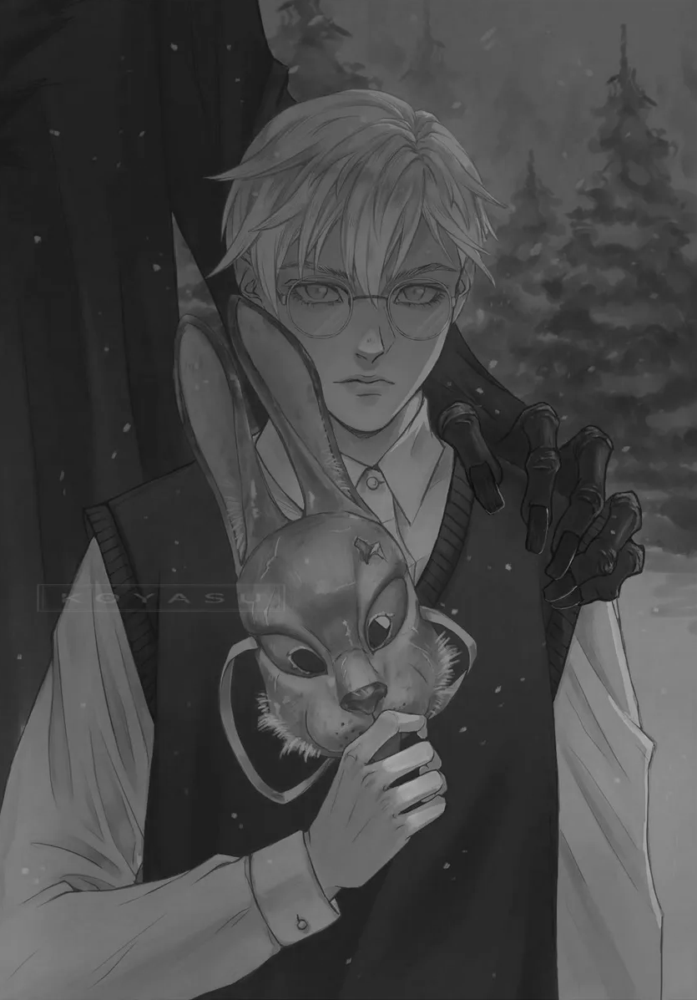

Статус: Ученик шестого класса
Вселенная: The Bunny
Способности: "звериная сущность" в облике зайца, превосходящая по силам человеческую.
"С вещами всё просто — их можно починить. А как быть с отношениями?"
Двенадцатилетний шестиклассник, который вместе с семьёй переезжает из города в глухой таёжный посёлок. По своему характеру тихий, застенчивый, вежливый, заботливый старший брат по отношению к Оле, вот только в тихом омуте черти водятся, а его черти - обезумевший стан, построивший оркестровую яму. Всего за несколько дней после переезда в жизни мальчика произошел ряд событий, что начали пробуждать внутреннего демона в маске Зайчика. А началось все с загадочной пропажи детей в поселке и встречи с девочкой лисицей по имени Алиса...
Страдает неким психическим расстройством, предположительно, шизофренией. Это расстройство приводит к припадкам, в ходе которых Антона мучают галлюцинации, либо напротив, наступают провалы в памяти, из-за которых он забывает те или иные события и собственные действия. Для того, чтобы ослабить припадок и притупить сознание Антона, его родители дают ему специальные таблетки, от которых он становится сонным и теряет последние силы. Однако слишком активное использование лекарств чревато тем, что Антон может из-за их приёма впасть в кому, что позволит его второй личности взять над ним контроль.
ДОСЬЕ ПЕРСОНАЖА
